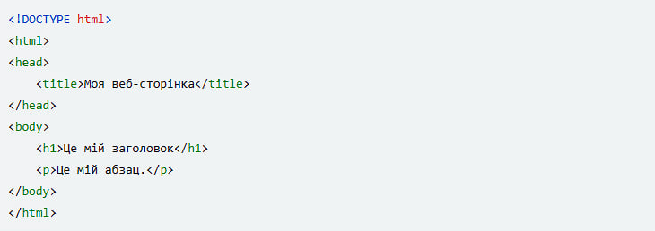
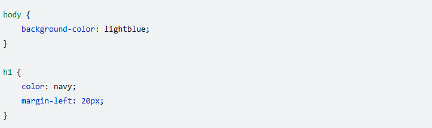
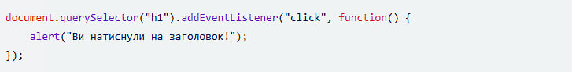

Домашнє завдання з інформатики
Створіть HTML-структуру: HTML використовується для створення структури веб-сторінки. Ви можете створити різні елементи, такі як заголовки, абзаци, списки, посилання, зображення тощо.

Додайте стилі за допомогою CSS: CSS використовується для стилізації елементів веб-сторінки. Ви можете змінити колір, шрифт, розмір тексту, відступи, рамки та інше.

Додайте функціональність за допомогою JavaScript: JavaScript використовується для додавання функціональності на веб-сторінку. Ви можете створювати кнопки, які виконують дії, відображають або приховують елементи, змінюють контент веб-сторінки динамічно тощо.
